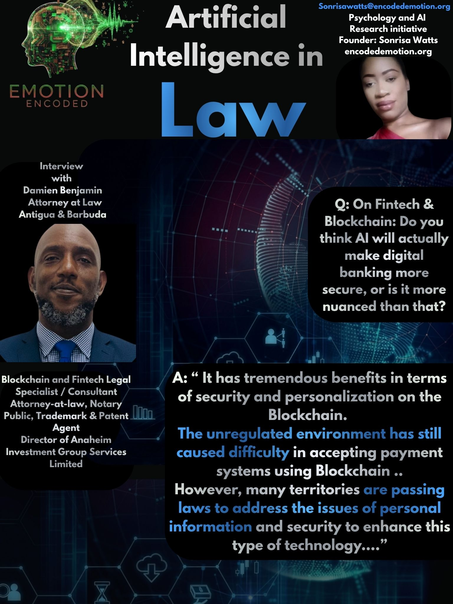

I spoke with Attorney-at-Law Damien Benjamin to see how legal professionals feel about using AI. Mr. Benjamin is the Principal of Benjamin Legal in Antigua and Barbuda. He is a Blockchain and Fintech Legal Specialist, Notary Public, and Trademark Agent with over twenty years of experience. As a graduate of the Norman Manley Law School and Managing Director at Anaheim Investment Group Services Limited, his insights show exactly where technology is useful, and where human experience is completely irreplaceable.
Fintech & Decentralized Security
Question: On Fintech & Blockchain: Do you think AI will actually make digital banking more secure, or is it more nuanced than that?
Mr. Benjamin Response: Yes. It has tremendous benefits in terms of security and personalization on the Blockchain. The unregulated environment is still causing difficulty in accepting payment systems using Blockchain and other similar technologies. However, many territories are passing laws to address the issues of personal information and security to enhance this type of technology.
Insight: AI brings clear security benefits to digital banking and blockchain. However, the real issue is that the law has not caught up to the technology. Right now, a lack of clear rules makes it hard for many places to accept these systems. As different territories pass new laws to protect data and privacy, these AI tools will become much easier to trust and use safely.
The Expertise Threshold
Question: Do you prefer using AI just to catch small mistakes, or would you trust it to draft the first version of a complex legal contract?
Mr. Benjamin Response: No. Legal opinions, drafts, and complex legal matters would still need the intervention of human interaction. Years of experience and knowledge developed by experienced lawyers cannot be duplicated by AI and, as such, will have faults that might lead to issues within the legal system.
Insight: AI is great for catching typos, but it cannot draft complex legal work. A computer cannot copy the years of real-world knowledge that an experienced lawyer has built up. If we rely on AI to write serious legal documents from scratch, it will leave hidden mistakes that can cause massive issues down the line.
The Logic and Empathy Paradox
Question: When making a decision using AI, would you need to see the AI's logic, or do you only care if the answer is right? (For example, statistics or numbers).
Mr. Benjamin Response: Yes, the logic and reasoning is very important. The more interaction AI has with humans, it gets the opportunity to learn logic and decision-making. The lack of empathy by AI leaves cognitive dissonance between parties.
Insight: A correct answer or a set of numbers is not enough. You need to see how the AI came to its conclusion. Legal decisions affect real human lives, and AI does not have feelings or empathy. When a computer gives an answer without showing its logic, it creates a massive disconnect. We need transparency to bridge the gap between computer code and human reality.
Research Verdict
Conclusion: Talking with Mr. Benjamin shows that AI cannot replace human judgment in law. It works best as a basic tool to catch errors, while the actual strategy, reasoning, and empathy must come from a human expert.
Sonrisa Watts // Emotion Encoded // 2026